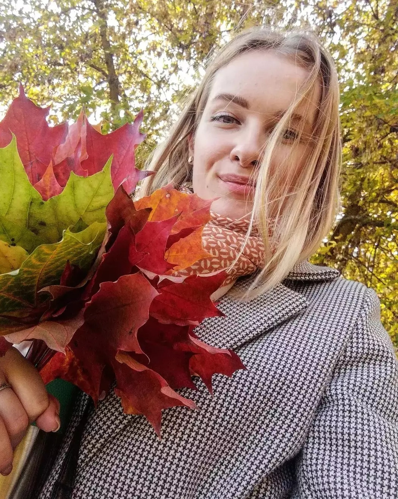
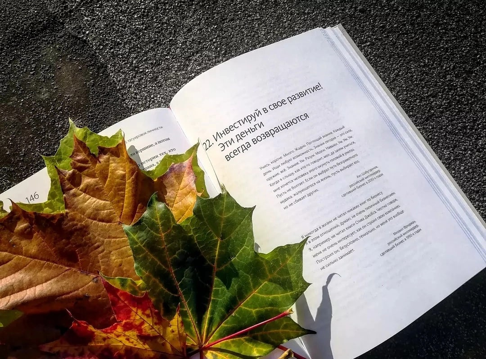
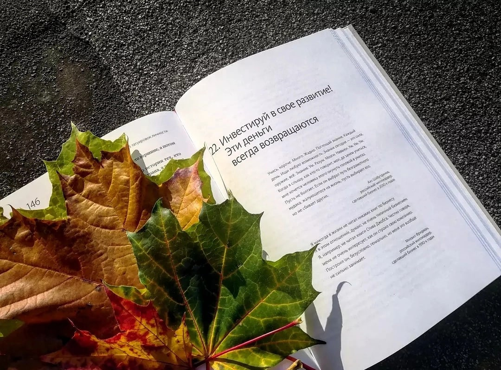

Обо мне
Я, Кулеш Елизавета Болеславовна - инициативная, энергичная, творческая натура (уж очень просила меня добавить это описание мама). Как вы уже могли заметить отчество у меня не из обычных, поэтому частенько у людей возникают уймо вопросов о нем. Мой папа Болеслав Зигмундович, дедушка Зигмунд Брониславович, прадедушка и прабабушка Бронислав и Бронислава 😊. По маминой линии: дедушка Афанасий, прадедушка - Адам Карлович, прабабушка - Катажына Мартиновна. По-моему это один из интересных фактов обо мне и моей семье.
Почему я заинтересовалась web-разработкой?
Почему я заинтересовалась web-разработкой?! Знаете, когда в детстве тебя спрашивают "Кем ты хочешь стать?", в большинстве ответов слышится: врачом, учителем, летчиком (ну по крайней мере у меня было так, конечно же поколения меняются и в наше время детки бы ответили скорее всего, что хотят стать тик-токерами).Но я не об этом. Если задать тот же вопрос в подростковом возрасте, то мне кажется, что ответ, в большинстве случаев, так же был бы не уверенный, так было и со мной. Если задать тот же вопрос мне сейчас, я отвечу "Я хочу в it". И вернемся все-таки к вопросу как я заинтересовалась именно web-разработкой. Так вот, на моем жизненном пути повстречался человек, который дал этому толчек, так как it для меня звучало всегда устрашающе. До того, как я узнала об этой сфере чуточку больше, когда мне говорили об it у меня в голове сразу воспринималось как будто речь идет об информатике, а информатика, чтобы вы понимали, не очень мной любимый предмет. Каждый раз, когда я шла на этот предмет, меня до тошноты воротило, поэтому изначально и it-сферу я воспринимала немного с отвращением. Но после того, как я задалась этим вопросом и начала изучать направления, которые есть в этой сфере, я приятно была удивлена, что это совсем не что-то нудное и скучное, а совсем наооборот. Но мне понадобился год, чтобы я окончательно себя решила попробовать в этом и вот я здесь в Codegerl Shool .
О профессии
Что касается моей профессии, я работаю в банке. И интересен здесь тот факт, что когда говоришь, что ты работаешь в банке, у всех создается впечатление, что если ты работаешь в банке, то денег у теб немерено. И знаете так-то оно так, но не совсем. Денег немеренно если только в самом банке, но не у меня лично. И если кто-то хоть чуточку знаком со спецификой работы в банке, тот понимает как это нелегко, особенно работа с физ. лицами. Я пошла работать в банк после универа и мне нужно было отработать 2 года. Сначало было страшно, так как много сложного и непонятного и плюс ко всему большая ответственность на тебе. Потом стало интересно, когда ты разбираешься в своей работе, это тебя вдохновляет, если можно так сказать. Уже после года моей работы в банке, я начала терять интерес, все становилось рутинным, каждый день как день сурка. Это был мой переломный момент. И вот с того момента я и начала искать себя в чем-то другом и нашла, нашла, то что дейтвительно мне интересно, то к чему меня влечет, осталось только "всего ничего", всего-то обучиться😁 😅.
Мои любимые книги
Автор неизвестен
Почему люди слушают песни? Почему люди читают книги? Чтобы на время
забыться, сбежать от себя. Хорошая книга, хорошая песня, они заглушают твой
внутренний голос. Они как бы берут управление на себя. Ты погружаешься в
песню, ты погружаешься в книгу – и освобождаешься от своих собственных
переживаний и мыслей и проникаешься мыслями автора. Ты как будто выходишь
из своего тела и становишься кем-то другим.
Книги - это одно из моих увлечений, но к сожелению не всегда на них хватает времени. Одна из моих любимых книг, автор которой является Гийом Мюссо, имеет название "Здесь и сейчас" . Книга потрясающая, сюжет необычный, интересный стиль написания книг у данного автора, читая ее у тебя складывается немного ложное впечатление, так как в конце все переворачивается таким образом, что тебя просто переполняют эмоции от прочитанного. Я рыдала от концовки данной книги. Так что советую прочитать.

Книга, которая является моим справочником жизненных правил, которая мотивирует меня - это "45 татуировок личности" , автор Максим Батырев. Я достаточно прочитала книг по саморазвитию и не одна не "зацепила" меня так как эта. К ней хочется возвращаться и возвращаться, настолько все понятно и ясно написано, реальные примеры, которые не новые для людей, но если бы автор их не подчеркнул в своей книге, то они и остались бы незамеченные для меня. Так что, если кто-то еще не нашел для себя книгу, которая бы внесла ясность в жизнь и которая бы мотивировала, советую прочитать ее.
 

Без кота и жизнь не та!
Его зовут Амур и ему уже 5 месяцев. И за эти 5 меясцев у него появились как и доброжелатели так и ненавистники. Немного фактов о нем, точнее о его неофицальных кличках:
- Саня Белый
- Беляк
- Сфинкс
- Морда усатая
- Бездонный кот(так как ест он действительно много)
- Обожает есть огурцы (если поставить его перед выбором: огурец или мясо, выбор будет очевиден)
- Встает в 6 утра, ну иногда может дать поспать 15-20 минут.
- хитрый и непредскзуемый (лучше с ним не связываться)